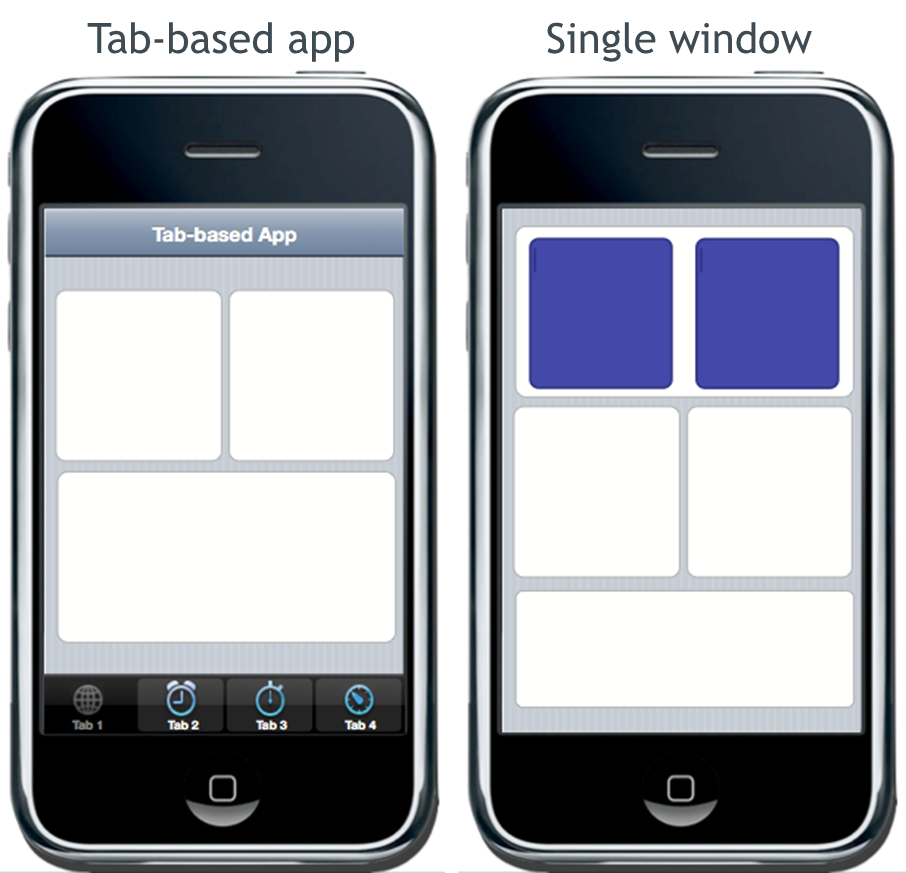
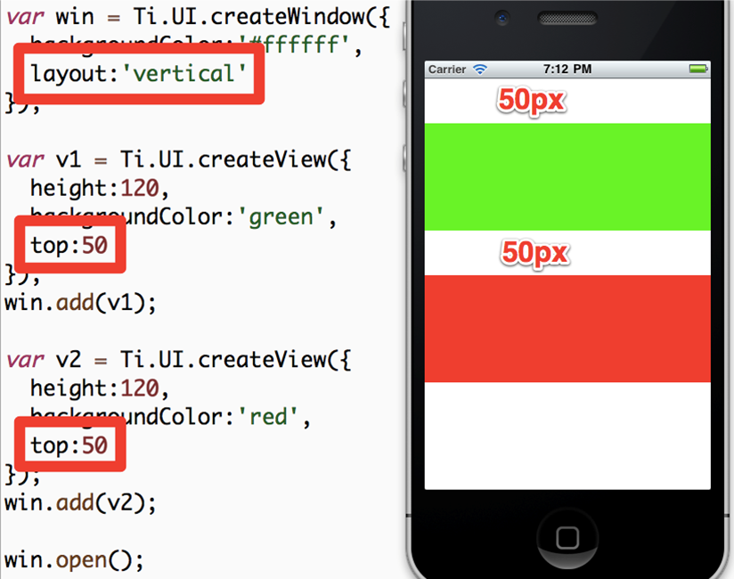

Module time: 1 hour, 15 mins(30 mins teaching, 45 mins lab)
AGENDA
- Basic Titanium user interface structures
- The Titanium View Hierarchy
- Layouts and positioning
- Event Handling
View hierarchy = relationship components have to each other as you lay them out
Event handling on a component and app level
iOS User Interface Components

Briefly introduce the key iOS user interface components especially for the Android users in the class
Android User Interface Components

Briefly introduce the key Android user interface components especially for the iOS users in the class
Basic Application Structure

Brief: there are two basic ways to structure an app
Tab group with multiple windows
Single window with individual views or stack of sub-windows
Key goal is to make our UI elements self-contained and self-updating to abstract the UI from the app's logic
For you web developers ...
A "window" is analogous to a "page"
A "view" is analogous to a "div"
Ti.UI namespace provides many specialized controls (buttons, text field, pickers, scroll views)
UI objects are composed in JavaScript similarly to DOM fragments
UI elements composed in constructor style structure, pass parameters and get an object in return
Units
Definitions: dip = display-independent pixels == 'points'
System units - on Android = pixels; on iOS = dip
Absolute measurements: px (pixels), dp/dip, mm, cm, in
Relative measurements: % = percent of the parent's height or width
var view = Ti.UI.createView({
/* You would not normally mix units like this */
top: '10mm',
left: '5px',
width: '30%',
height: 50 /* default system units are used here */
});
Can set a default unit in tiapp.xml
See wiki for how-to
Coordinates Grid
iPhone (original or Retina) - 320 by 480 point grid
iPad (original or Retina) - 1024 by 768 grid
Android sizes vary:
- HVGA = 320 by 480 px
- WVGA800 = 480 by 800 px
- WVGA854 = 480 by 854 px
You can use dp/dip units on Android to achieve the same density independent grid as is default on iOS.
Positioning

top and leftbottom and rightcentersize provides rendered dimensions
Layout modes
- Absolute
- Vertical
- Horizontal
Absolute — relative to parent not screen Vertical & horizontal — apply to parent object — we'll see examples in upcoming slides
Absolute Layout


We have here a window with a couple UI elements
The button is positioned 170 points from the parent's top edge
Absolute Layout


Absolute, left 30 points from left edge
Vertical Layout

Parent object has the Vertical layout
Child object's positions are then in relation to each other within the parent
'Auto' Behaviors
- Deprecated - use Ti.UI.SIZE or Ti.UI.FILL instead
- SIZE: buttons, labels, images, text fields and areas
- FILL: windows, views, tables, webviews
- Some are mixed: table rows - FILL for width and SIZE for height
Used to set 'auto' as value for height or width and Ti would 'figure it out'
But that was inconsistent across platforms and view components
You can now be more explicity by specifying FILL (fills parent) or SIZE (sized to fit its contents)
Batch Updates
- Default: Coordinate/dimension changes are processed serially
- Call
startLayout() before, finishLayout() after to batch changes
- Or call
updateLayout(params)
When moving or resizing objects, changes are processed one at a time
Use these techniques to perform those changes as a single batch -- faster
Event Handling
Similar To JavaScript in the browser
Can use addEventListener on nearly any JS object
Can programmatically fire events on objects as well
Demo: A simple event handler in the default project
Add event listeners to objects at a component, object or app level
Programmatically fire events
Demo:
- Test app from prev. module or new default app
- Add event listener to the label on win1, change text of label(Note: 'tap' event is the same as 'click')
- Build, click label to see event fired
Execution Contexts
App has one execution context by default - similar to JS thread in the browser
Can create more by:
- Windows with URLs
- Background Services
Each has unique symbol space - variables declared in one context unavailable in another
Demo: Execution Contexts in the default application
Execution context is a variable space, processing thread
App.js is default context, which you get automatically
Can create others, but maybe not desirable
Demo:
- In your test app, move win1 code to separate file
- Update app.js to load the windows from those files
- Build — error — can't find window object
- Fix with Ti.UI.currentWindow, re-build
More On Execution Contexts
Typically, we recommend using only a single context
Use multiples only when "clean slate" is desired
If multiple contexts are in use, it is often necessary to share data across them
For this, use application-level events
Kitchen Sink specifically uses separate contexts because it needs / wants those clean slates
Application-Level Events
Useful for sending JSON-serializable data across contexts
Useful for publishing and subscribing to application events even in a single context
Critical API in component oriented applications
Demo: Cross-context messages in the default application
Using App level events, we can de-couple our UI from our logic
UI components can listen for events and update themselves
Events can just alert or pass JSON serializable data
Demo:
- Move win 2 to win2.js, using Ti.UI.currentWindow
- Label2, subscribe to app:labelclicked event
- receives data in event object
- update label2 text & color
- In win1.js, click event handler fires app:labelclicked
- pass message text as second arg
- Build — doesn't work — window has to have been opened to receive events
Composing Your App's UI
50% or more of your job is UI component construction
Most of the rest is event handling logic
Your app will be more maintainable if you break it down into small components
Recommendation: Use app.js to bootstrap your application and create/show/open one single UI component from your app
Self-contained, self-updating components are easiest to maintain
Single context is recommended
Iterative UI Programming
UI programming can boil down to pushing pixels
Need to have the fastest possible cycles, but also need to test cross-platform from the get-go!
iOS Simulator is fast for dev, device cycle is slow
Android Emulator is S-L-O-W - keep it running!
Android devices are faster (better for dev)
Don't wait to test cross-platform, Android and iOS can be very different
Lab Goals
Build the TiBountyHunter UI
Requirements:
- Display list of fugitives (dummy data)
- Drill down into a detail window
- Provide a window to add a fugitive
wiki.appcelerator.org/display/td/220+UI+Fundamentals
Detail window — buttons don't do anything, show labels with actual data
Add window will be empty at this point
Demo finished code: TiBH220
Hint: try to re-use as much as possible. So, one function to show detail window that accepts a busted boolean to show the details for the at-large and captured fugitives
Solution Walkthrough
TiBH220 — Explain these files and changes:
- ui/BountyTable — populateTable() and row objects
- ui/common/DetailWindow — window constructor, labels, and buttons
- ui/common/AddWindow — window constructor
- ui/handheld/ApplicationWindow — table instantiation, event listener, menu, and rightNavButton